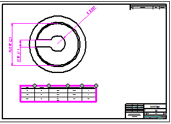

Tolerance tables
Creating tables from tolerance dimensions
You can use the Tolerance Table command to create a tolerance table from all of the dimensions with fit tolerance on a drawing sheet, in a drawing view, or from the dimensions that you select.

Before you place the tolerance table, you can use the Tolerance Table Properties dialog box to:
-
Specify that you also want to include dimensions that are placed inside the drawing view in the Draw In View environment. You can do this using the Options tab.
-
Create a table title using the Title tab.
-
Choose the order in which you want the tolerance values, class fit type, or tolerance type (upper stack tolerance, lower stack tolerance, or both) to be listed in the tolerance table using the Sorting tab.
-
Add columns that show user-defined properties on the Columns tab.
Dimensions eligible for creating tolerance tables
Any dimension that supports fit tolerance is eligible for creating tolerance tables. This includes linear, diameter, radial, concentric diameter, symmetric diameter, coordinate, arc length, and chamfer dimensions. Fit tolerance dimensions are defined in Solid Edge by selecting Dimension Type=Class on the Smart Dimension command bar or the Dimension command bar.
For more information, see Fit dimensions.
Modifying the content and format of a tolerance table
You also can change the formatting of a table after you place it on the sheet. For example, you can edit table cells directly to add boldface, italics, and underline to column headings. You can edit the text in a cell, for example to update a table title or subheading.
To learn how you can change the appearance of individual elements of a table—titles, columns, headers, and data cells—without changing the table style, see the following Help topics:
Saving the tolerance table format
You can save a tolerance table format with a name you define, so you can easily use it again. Use the Saved settings options on the General tab in the Tolerance Table Properties dialog box to name, save, and reapply your tolerance table format.
A quick way to reapply the table formatting is to use the Saved settings list  on the command bar.
on the command bar.
Updating a tolerance table
Tolerance tables are associative to the dimensions they reference. When you create a tolerance table using the By Active Sheet method or the By Drawing View method, and you add, delete, or edit a dimension on the sheet or a drawing view referenced in the table, then the table goes out of date. You can use either of these commands to update the tolerance table:
-
The Update command on the tolerance table shortcut menu.
-
The Update Views command on the command ribbon.
When you use the Add or Remove Dimensions button to add or remove dimensions from a tolerance table, the table updates automatically.
Creating a custom table style
You can use the Styles command to create your own, fully customized Table styles for tolerance tables. For example, you can define line color for the table border, grid, and heading dividers. You can change the text formatting of the column headers, for example, to apply boldface, italics, or underline, by creating an independent column header style.
When you place a tolerance table on the drawing, you can select a custom table style using the Table Style list on the Tolerance Table command bar.
For more information, see these Help topics: